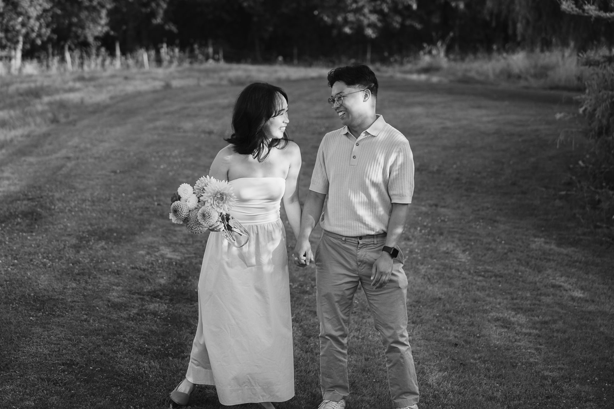

Every photographer says they shoot "candid." Almost none explain it. So you hear the word, nod, and have no idea what you are buying.
Here is what it means in practice, and why the best galleries are never purely one thing.
Documentary photography is the moments nobody arranged. Your dad wiping his eyes. The flower girl stealing a bite of cake. The groom seeing you walk in. We watch, we stay out of the way, and we press the shutter when something real happens.

The skill is not the camera. It is anticipation. You learn where a moment is about to happen and you are already standing there.
Posed is direction. We place you in good light, turn your shoulders, ask you to look at each other. Family formals are posed. Most portraits are posed. It is not fake. It is planned.
Done badly, posed looks stiff. Done well, you forget it was posed. The trick is giving you something to do instead of something to hold.
Here is the contrarian part. Pure documentary does not exist at a wedding, and pure posed is a bore. Most of the photos couples love most sit in between.
Take a walking shot. We set up the path and the light. We ask you to walk and talk. Then we step back, and what you do is yours. That is directed and candid at the same time.

Mostly documentary: getting ready, the ceremony, speeches, the dance floor. These moments cannot be repeated. We never stop them to redo a shot.
Mostly posed: family formals, the wedding party lineup, the group shot. Fast and efficient, so everyone gets back to the party.
A blend: couple portraits. This is where direction lets you relax. We give you prompts, a walk, a twirl, and then let the moment happen.
Couples say it a lot, and I understand why. You do not want stiff photos. But a day with no direction usually means no great portraits, no clean family shots, and no guarantee anyone is looking at the camera when it matters.
What you actually want is direction that does not feel like direction. That is a different request, and it is the one we aim at.
You are in good company. Read our guide for couples who are not photo people and you will see how we work with it. Tell us what you want your gallery to feel like, and we will tell you how we would shoot it. Get in touch here.
← Back to the journal